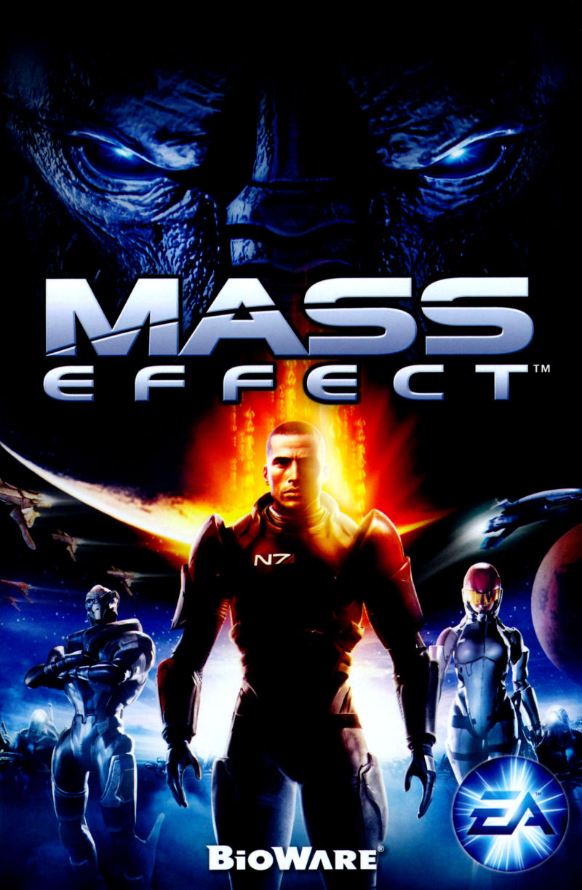
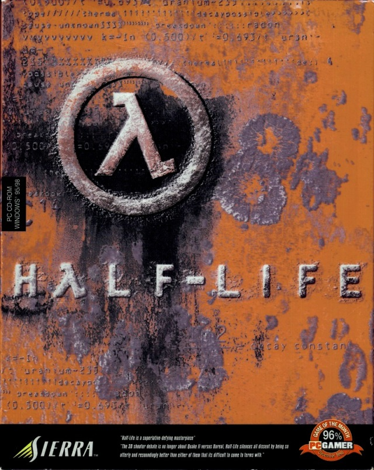
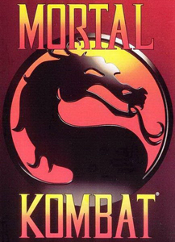

Топ-10 саундтреков всех времён
По версии нашего проекта (и миллионов игроков)
-

Final Fantasy VII
Композитор: Нобуо Уэмацу
Знаменитая «One-Winged Angel» и меланхоличная «Aerith's Theme».
-

The Elder Scrolls V: Skyrim
Композитор: Джереми Соул
Эпическая «Dragonborn» с хором на драконьем языке.
-

The Legend of Zelda: Ocarina of Time
Композитор: Кодзи Кондо
Мелодии, ставшие культовыми: «Zelda's Lullaby», «Gerudo Valley».
-

The Witcher 3: Wild Hunt
Композиторы: Марчин Пшибылович и Миколай Строински
«Silver for Monsters», «The Fields of Ard Skellig».
-

Halo: Combat Evolved
Композитор: Мартин О'Доннелл, Майкл Сальватори
Грегорианский хорал и эпичный главный мотив.
-

Super Mario Bros.
Композитор: Кодзи Кондо
Мелодия, вызывающая ностальгию даже у самого далёкого от видеоигр человека
-

Mass Effect
Композитор: Сэм Хьюлик
Vigil - cамая узнаваемая мелодия Mass Effect, олицетворяющая дух первой части и всей трилогии.
-

Half-Life
Композитор: Келли Бэйли
Главный экшн-трек первой части Half-Life! Композиция передает атмосферу паники, высокого темпа и страха, сопровождая интенсивные боевые сцены с участием духовых инструментов и рваного ритма
-
Grand Theft Auto: San Andreas
Композитор: Майкл Хантер
Потрясающие саундтреки Майкла Хантера сочетают элементы хип-хопа, фанка и кинематографичного звучания, идеально передающего атмосферу западного побережья США начала 90-х.
-

Mortal Kombat
Композиторы: Оливер Адамс и Морис Энгелен
Песня была написана в 1993-1994 годах и стала известной благодаря фильму 1995 года. Трек прочно ассоциируется с игрой, хотя впервые прозвучал в рекламной кампании и фильме.
* Список субъективен и составлен в образовательных целях.